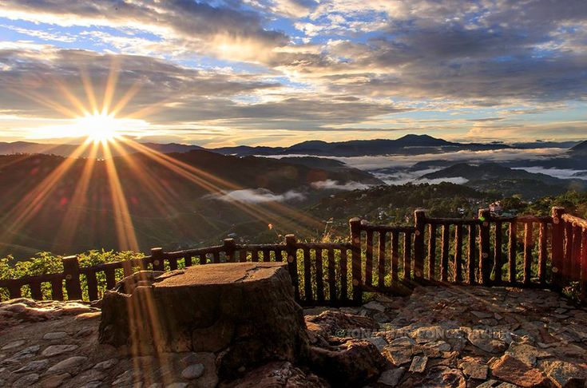
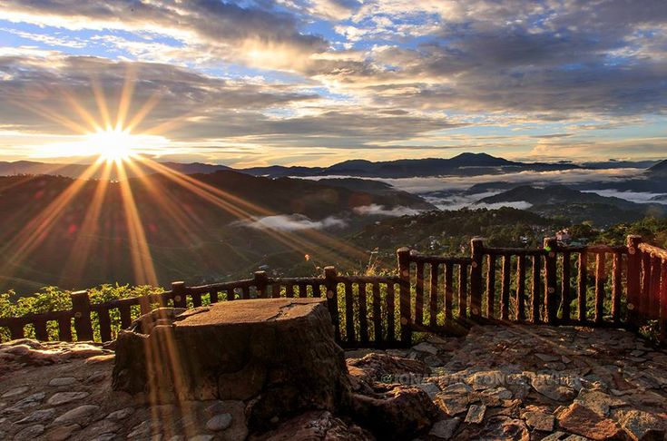
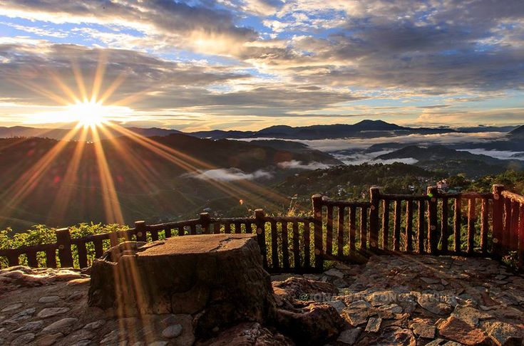

Baguio City
 

| Name: | Avellano, Charles Vincent N. | Topic: | Introduction to HTML5 |
| Activity No. | Hands-on Quiz 1 | Date: | 02/19/2025 |
Baguio City |

|
|---|---|
The Summer Capital of the Philippines |
|
| Baguio City is located in the province of Benguet in the Cordillera Administrative Region. It has an altitude of approximately 1,540 meters above sea level. The average annual temperature in Baguio is around 23°C, with its coolest months having an average of 18°C and the warmer months having an average of 21°C. The recorded lowest temparature in Baguio was on January 18, 1961, which had a temparature of 6.3°C. | |
| During the Pre-colonial Era, Baguio city was inhabited by the Igorot people, particularly the Ibaloi people, where they called the place "Kafagway." When the Spanish arrived, they never fully conquered Kafagway although they have made presenve in La Trinidad. This era lasted about 50 years which ended in 1898. Just a few years after, the American era began in 1900 that lasted until 1946. During this, many developments in the city's infrastructure happened like the Kennon Road, which marked the start of the city's popularity. During this time, it became the "Summer Capital of the Philippines." After this, WW2 came and the city suffered damage due to the Japanese occupying the area. When the war came to and end, the city started to recover and continued to grow. The cool weather, beautiful scenery made Baguio regain its title as the "Summer Capital of the Philippines." It was also called the "City of Pines" due to the city having abundant pine trees. Baguio's current name came from the Ibaloi word "bagiw," which means moss. | |
| The reason why Baguio is my chosen favorite/memorable place is because it is one of the earliest places I have been to. When I was still a kid, I clearly remember the Lion's head which made Baguio stick to my head since then. I was also with my family and cousins back then which made it more memorable. Now that I am older, I would love to travel to Baguio again to relive that day and to just enjoy the cool climate that Baguio has. |